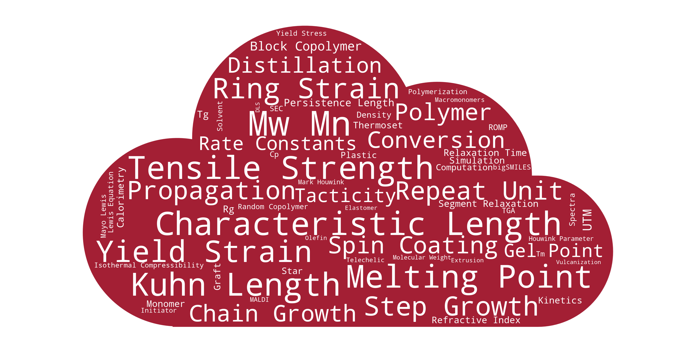
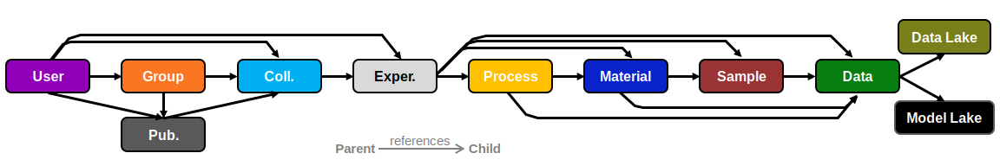

Overview¶
As part of CRIPT's mission to develop a digital ecosystem for polymers, there was a need to generate a standard data model and schema to share polymer data. The following documentation details the way in which polymer data is represented and stored and within the CRIPT ecosystem.
Importance¶
Having accessible well-structured data is the foundation of cheminformatics. The complexity of polymer structures with the wide range of characterization techniques and properties poses significant challenges in the formation of databases. This has led to several small, disparate data sets. The data structure presented here provides a universal system to capture all relevant polymer data in a manner optimized for large databases. It is designed to allow anyone to contribute for the benefit of the polymer community; with the goal of accelerating the pace of material innovation.
Value Proposition:
- Archiving system
- Eliminate the loss of data
- Saves money and time on replicating experiments
- Promotes good data recording practices
- Uniform structure
- Reduce time spent searching for data
- Increases completeness of data entered
- Effortless data sharing
- Gain access to large well structure data
- Enables machine learning and large data analytics
Philosophy¶
Reporting Guidelines¶
Reporting guidelines refers to what information is required to be captured about an experiment.
CRIPT has been designed with minimal reporting requirements as polymer data is highly variable in content and completeness. However, contributors of data are encouraged to provide as much data as possible as it ensures the polymer data has sufficient information to contextualize the data. Additionally, the more information provided will aid in the discoverability of the data. More specific reporting guidance can be found in the following documents.
Vocabulary¶
Vocabulary (controlled) is the set of terminology that provides unique identification and definition of datum.
CRIPT provide an expert curated vocabulary for polymer data. Contributors are highly encouraged to stick to the official vocabulary when possible, as it ensures data uniformity. Data uniformity is necessary for successful exchange information, search, and data retrieval.
CRIPT recognizes that the current vocabulary may not cover all polymer data that contributors desire to add to the
database, thus CRIPT accepts any user-defined vocabulary such that it begins with a +. Contributors can petition for
the addition of new official vocabulary by emailing cript@mit.edu with the term, brief description, preferred units,
and explanation of why it should be added to the official vocabulary.

Data exchange format¶
Data exchange format is the specification of how data is encoded to be a computer-readable and -processable format.
CRIPT structures data is formatted as a JSON files which are stored in MongoDB as BSON (a byte version of JSON). Thus, BSON data types are used.
Data Schema¶
Data Schema refers to the organization of key objects and entities, and their relationships. Data schemas are independent of the database implementation.
CRIPT's data schema was designed to link together polymer materials, the processes that produced them, and the associated data that characterize them in a graph. This enables the comprehensive store of all aspects of polymer data and a descriptive visualization.
There are four key objects (or nodes): Material, Process, Sample, Data. These nodes were designed to represent the fundamental objects of polymer material research. Additionally, a Model object is part of the data schema which provides a means to transform data.

Data Model¶
Data Model refers to a specific implementation of a data schema into a database. A data model includes additional consideration with regard to app design, hardware use, and additional features.
CRIPT's data model is an explicit embodiment of the data schema for a document based database, specifically Mongodb. The current data model is structured as a directed acyclic graph (DAG).

Version Control¶
Version control is a system that records changes to a file or data entry over time so that you can recall specific versions later.
The CRIPT database implements data version control as it provides a complete long-term change history of every file. This benefits science by increasing data transparency and minimizes the re-analysis or processing of data.